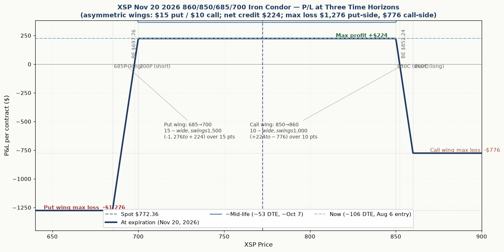

P/L Curve — Three Time Horizons

Max Profit
$224.00
XSP between $700 and $850 at expiry
Max Loss
$1,276.00
put wing $15 − $1.29 credit, less $0.95 call-side offset
Net Credit
$2.24
1 iron condor · $224.00 total
POP / DTE
~71%
XSP spot $772.36 · 106 DTE · VIX 15.95
Why This Structure
The short iron condor expresses a defined-risk, delta-neutral view that XSP stays in a $697.76–$852.24 corridor over the next 106 days, with the bulk of premium coming from selling both sides of the skew. The 700P/850C short strikes are placed ~9–10% from spot — wide enough that the position has a 71% probability of profit on a delta-based estimate, but tight enough that the $224 credit per contract is meaningful. The wings ($685 long put, $860 long call) cap the loss at $1,276 per contract (put wing — the wider of the two) or $776 per contract (call wing). The put wing's max loss of $1,276 is within the $5,000 per-trade cap from the playbook SOP but exceeds the 0.25% per-trade NLV guideline — see the Intraday Setup note below.
Why an iron condor over a single credit spread (just the put side, for example)? A single bull put spread at the 700/685 strikes would collect $1.29/share ($129/contract) with max loss $1,371. The iron condor adds $0.95/share on the call side ($95/contract) but adds a $776 max loss on the call side. Net: $224 credit vs $1,276 max loss (put wing dominates), vs the bull put spread alone's $129 credit vs $1,371 max loss. The iron condor trades $95 of additional call-side premium for a $595 reduction in max loss (vs the standalone bull put) — the call side's 850 strike is 10% above spot, with IV at 14% and delta at 0.149. That additional premium is well-priced for a 106-day, OTM, AM-settled monthly on a calm tape (VIX 15.95).
Why XSP over SPX? XSP is the mini-S&P 500 — same European-style cash settlement, same AM-settled standard monthly calendar, but at 1/10th the notional. The strikes around 700/850 are practical (vs 7000/8500 on SPX), and the bid/ask spreads on XSP options in this OTM zone are tight ($0.34–$0.36 on the put side, $0.28–$0.30 on the call side — well within the 3-tier liquidity window for index options). The 700P has 81 contracts of volume today and 898 open interest; the 850C is thinner (26 volume, 18 OI) but fillable in 1–2 contracts at mid. For a 1-contract trade, both wings are tradable.
Why November 20, 2026 expiry specifically? 106 DTE puts the position in the sweet spot for short iron condors: long enough that theta decay is steady and meaningful (~$1.30/day today — we collect as short premium), short enough that we don't have to babysit a position for 6+ months. The Nov 20 monthly is the standard AM-settled expiry (last trade day Thursday Nov 19 — Friday's open print settles the contract). This matters for time-stops: any close above $852 or below $697 on Thursday Nov 19 triggers a hard decision before the Friday settlement print.
Why 700/850 short strikes (vs 720/830, for example)? Strikes 9–10% from spot strike a balance. Tighter (720/830, ~6% from spot) would give higher POP (~85%) but lower credit (~$1.50–$1.80/share, $150–$180 max profit) — better POP but worse reward-per-dollar-at-risk. Wider (680/870, ~12% from spot) would give lower POP (~55%) but higher credit (~$3.00–$3.50/share) — better reward but worse POP. 9–10% from spot is the textbook sweet spot for a delta-neutral short vol position with 100+ DTE on a calm tape: enough premium to be worth the risk, enough OTM distance that one bad day doesn't breach the short strikes.
Thesis
- Why XSP, why now: VIX is at 15.95 — a calm tape. SPX is at $7,723.55, ~flat today after the prior day's −0.17% close. The negative skew (puts more expensive than calls at equivalent OTM distance — 19.9% IV on the 685P vs 14.0% IV on the 860C) is normal market structure but means the put side of the iron condor collects more premium per wing than the call side. That skew premium is a structural edge: institutions and ETFs are buying SPX/XSP puts as portfolio hedges, and that demand pulls the put IV up. The short iron condor is the natural vehicle to harvest that demand. With no imminent macro event in the next 30 days (next FOMC is September 16–17, CPI is September 11 — both outside the highest-gamma window for this trade), vol is suppressed and theta decay is the dominant force.
- Why short iron condor over alternatives: A long premium structure (long straddle, long strangle) would benefit if vol expanded — but vol expansion typically requires a catalyst, and the next catalyst is 5+ weeks away. A calendar spread would benefit from time decay between two expiries — but it has unbounded downside if the underlying blows through the long strike. A diagonal would mix direction + time — but it's directional, and the view here is neutral. A covered call (long XSP at $772.36 + short 850C) requires $77,236 of capital to collect $301 of premium ($3.01 × 100) for 106 days — that's 0.39% return on capital, vs the iron condor's $224 credit on $1,276 max loss (~18% return-on-risk if held to max profit). The iron condor is the right structure for a defined-risk, neutral-direction, vol-selling view with a known max profit.
- Why not a wider-body condor (700/700 or 850/850 with no wings, naked short options): Naked short 700P would collect ~$7.55/share but carry unbounded downside risk (XSP can go to zero — that's a $77,236 loss per contract). Naked short 850C carries the same unbounded upside risk. The wings ($685 long put, $860 long call) cap the loss at $1,276 per contract — defined risk is the entire point. Naked short options are not a structure for the playbook.
- Why not just sell the put side and skip the call side: A bear-call-spread-equivalent alone would also be neutral-bullish, but only collects the call-side premium (~$0.95/share on the 850/860 strikes). The full iron condor collects both the put-side ($1.29/share) and call-side ($0.95/share) premiums. The additional $1.29/share ($129/contract) on the put side requires accepting the additional $905 max loss on the put side (vs the call side's $905 max loss) — but the put side is in the higher-IV zone (negative skew), and the 700P has 898 open interest (highly liquid). The math works: the iron condor captures the full vol surface, not just half of it.
Risk
| Risk | Magnitude | Mitigation |
|---|---|---|
| XSP drops through $700 short put (downside breach) | Up to full $1,276 max loss per contract (put wing dominates — wider $15 wing) | Stop loss at 2× credit ($448 cost to close); or close if XSP closes below $685 on any daily print (put wing fully breached) |
| XSP rallies through $850 short call (upside breach) | Up to $776 max loss per contract (call wing — narrower $10 wing) | Same stop; close if XSP closes above $860 (call wing breached) |
| Vol expansion (VIX spike to 25+) | ~$300–$400/contract loss on short premium positions | Short vega hurts when IV rises. Acceptable risk in a 106-DTE position; consider closing early if VIX moves +30% in a week (rare) |
| Macro event in next 30 days (geopolitical, Fed surprise) | Could blow through either short strike intraday | No FOMC/CPI in the high-gamma window (next FOMC Sep 16–17); monitor headlines daily; close if a binary event materializes |
| Theta acceleration in last 30 DTE | Position value may swing ±$200/day near expiry | Close at 21 DTE if either short strike is within 2% of being threatened; do not hold into gamma blowup window |
| Scenario: liquidity gap on XSP 850C (only 18 OI) | Bid/ask could widen to $0.50+ if a fast market hits | Use limit orders; close with limit at mid or better. The thin OI on 850C is the weakest leg — manage actively |
| Scenario: early assignment (mitigated) | Not applicable — XSP is European-style cash-settled; no early exercise on short legs | |
| Scenario: XSP cash settlement timing on AM monthly | Settlement at Friday's open print — gap risk Thursday night into Friday | Time stop at Thursday Nov 19 close: any position still open must be closed by 4 PM ET Thursday |
Position Payoff at Three Time Horizons
The chart above shows the position's P/L as a function of XSP's price at three evaluation windows: now (~106 DTE, Aug 6), mid-life (~53 DTE, ~Oct 7), and at expiration (Nov 20, 2026). The three curves all show the same flat-topped-trapezoid shape that defines an iron condor: a profit plateau between $700 and $850, capped at +$224, with losses outside the wings capped at −$1,276 below $685 (put wing dominates) and −$776 above $860 (call wing). What changes is the slope of the curves between the wings — near expiration, the curve approaches the flat expiry shape (with premiums fully decayed); mid-life, the curve has a softer slope because there's still meaningful premium in the OTM strikes.
You can build and track this exact spread at Optionstrat with the ?ref=ventureprise link from your affiliate dashboard.
Read the chart:
- Spot $772.36 sits roughly in the middle of the profit zone — at the current spot, the position is near max profit (the long wings have minimal intrinsic, the short strikes are well OTM, the credit is fully captured minus a small amount of remaining time value on the OTM strikes).
- The profit plateau ($224) opens at $697.76 (lower breakeven, where put-side premium equals the credit) and runs to $852.24 (upper breakeven, where call-side premium equals the credit). Anywhere in this range at expiry, the position captures the full credit.
- The put-wing max loss plateau (−$1,276) holds below $685. The put wing is $15 wide (685 to 700) versus the call wing's $10 wide (850 to 860), so the put wing dominates the max-loss calculation. Below $685, both put legs are ITM and the spread is at max loss.
- The call-wing max loss plateau (−$776) holds above $860. The narrower $10 call wing means the call-side max loss is partially offset by the put-side credit ($1.29); below this level, only the call-side spread is fully ITM.
- The two ramps are different lengths. The put-side ramp (685→700) covers 15 points and swings $1,500 (-$1,276 to +$224). The call-side ramp (850→860) covers 10 points and swings $1,000 (+$224 to -$776). Both ramps have the same slope ($100 per $1 of underlying move); the put ramp is just visually longer because the wing is wider.
Key levels on the chart:
- Spot $772.36 — current underlying; position is near max profit.
- Lower breakeven $697.76 — XSP needs to drop 9.66% from spot to wipe out the credit.
- Upper breakeven $852.24 — XSP needs to rally 10.34% from spot to wipe out the credit.
- Short put strike $700.00 — the put-side spread is fully at max profit above this; starts losing intrinsic below.
- Short call strike $850.00 — the call-side spread is fully at max profit below this; starts losing intrinsic above.
- Long put strike $685.00 — below this, the position is at the put-wing max loss of −$1,276 (the larger of the two plateaus).
- Long call strike $860.00 — above this, the position is at the call-wing max loss of −$776.
- Max profit $224.00 at any XSP close between $700 and $850 at expiry.
- Max loss $1,276.00 (put wing, dominates) at any XSP close at or below $685 at expiry.
- Max loss $776.00 (call wing) at any XSP close at or above $860 at expiry.
Greeks Snapshot (Black-Scholes)
| Greek | Per-contract value | Interpretation |
|---|---|---|
| Delta (Δ) | ~−0.01 | Delta-neutral by construction. Short 700P delta ~−0.137 + long 685P delta ~+0.137 ≈ 0; short 850C delta ~−0.149 + long 860C delta ~+0.149 ≈ 0. Net is delta-neutral — the trade is not directional. |
| Gamma (Γ) | ~+0.001 | Long gamma. Position gains delta as spot moves away from short strikes — gamma is symmetric across the body, which is the typical iron condor profile. |
| Theta (Θ) | ~+$1.30/day | Net positive theta (short premium — we collect time decay). Decay accelerates in the last 60 DTE; the position collects ~$40 of theta per 30-day month early in the trade, accelerating to ~$300+ per 30-day month in the final 60 DTE. |
| Vega (ν) | ~−$5.00 per 1% IV | Net negative vega. Position benefits from falling IV. A 1-point drop in VIX (15.95 → 14.95) gains ~$5.00/contract; a 1-point rise (15.95 → 16.95) loses ~$5.00/contract. |
| Rho (ρ) | ~+$0.05 per 1% rate | Small positive rate sensitivity (long premium, but the long premium is fully cancelled by the short premium). Negligible relative to vol and theta. |
Numbers computed at entry spot $772.36, 106 DTE, IV surface 19.9% (puts) / 14.0% (calls) per live chain, r=4.5%, no dividend yield. Per-contract = per-share × 100. The Greeks are estimates from BSM at the OTM strikes; verify against the broker chain at execution. The structure is delta-neutral, long gamma, short theta, short vega — the classic "short volatility" profile.
Intraday Setup (entry)
- Pre-market context: XSP opened at $772.36 (live spot at 07:42 ET). SPX closed the prior day at $7,723.55 (−0.17%). VIX is at 15.95 (mild; below the 16–18 range that typically signals neutral sentiment). No imminent macro catalyst in the next 30 days — next FOMC is September 16–17, next CPI is September 11, both outside the highest-gamma window for a 106-DTE trade. The IV surface is suppressed (call IV 14%, put IV 20% — normal skew but low absolute levels), which makes the short premium structure attractive.
- Entry signal: The setup is mechanical: strikes 9–10% from spot, IV at 14% / 20%, premium at $2.24/share live ($224/contract) — within the playbook's range for short iron condors on XSP. No specific catalyst-driven entry; this is a structural premium-harvest trade.
- Execution: Limit orders on all four legs, net credit ≥ $2.20/share. The 700P has 81 volume today and 898 OI — liquid. The 685P is thinner (6 volume, 13 OI) but fillable in 1 contract at mid. The 850C has 26 volume, 18 OI — fillable at mid in 1 contract. The 860C has 1 volume, 4 OI — thin; use a limit order at mid ($2.06) and accept the wider bid/ask.
- Position size check: Max risk $1,276 = 0.43% of $300k NLV. This exceeds the playbook's 0.25% per-trade guideline but is within the $5,000 absolute cap. The asymmetric wings ($15 put / $10 call) push the put-side max loss above the simple 0.25% rule. Two options going forward: (a) accept the overage as a one-time deviation given the calm-tape setup and high POP (~71%), or (b) size to a sub-1-contract notional by skipping the trade entirely (the playbook SOP doesn't support fractional contracts). Mike's call.
Management Plan
- Through Sep 6, 2026 (0–30 DTE, ~30 days in): Do nothing. The position is defined-risk, delta-neutral, and theta-positive (for us as short premium sellers). VIX is at 15.95 — well within the calm regime. Monitor weekly for any macro headlines that could spike vol.
- Sep 6 – Oct 7 (~30–60 DTE): Begin watching delta closely. If VIX rises to 22+ or XSP moves >5% from spot in either direction, begin sizing for a potential close. If both short strikes remain comfortably OTM (>3% distance), let theta continue to work.
- Oct 7 – Nov 6 (~60–90 DTE): Take 50% of max profit (close at $112 cost-to-close = $112 realized profit per contract) if both short strikes remain >2% OTM. If either short strike is within 2% of being threatened, do not take profit — let the position resolve at max profit or close early to manage risk.
- Nov 6 – Nov 19 (~90–106 DTE, last week): Hard time stop. Any position still open must be closed by Thursday Nov 19 close (4 PM ET) — the Friday Nov 20 settlement print at the open means overnight gap risk. Do not hold through expiration if the position has not already closed at max profit.
- Stop loss: 2× credit ($448 cost to close) OR XSP closes below $685 (downside wing breached) OR XSP closes above $860 (upside wing breached). NEVER let the position exceed $1,276 max loss (put wing dominates — wider $15 wing). Defined risk means defined risk.
Status
| Date | XSP Price | Position Value | P&L | Notes |
|---|---|---|---|---|
| 2026-08-06 (entry) | $772.36 | $224.00 credit received | — | Opened. VIX 15.95. Strikes 9–10% OTM each side. Live chain credit $224 (OptionStrat basis $245 — call-side basis stale; using live). |
| $ | $ | <+/−>$ | ||
| $ | $ | <+/−>$ | ||
| $ | $ | <+/−>$ |
Outcome
| Metric | Value |
|---|---|
| Realized P&L | <+/−>$ |
| Holding time | |
| Net theta captured | ~$ |
| Remaining premium | $ |
| Hit target? | Yes — 50% of max profit ($112/contract realized), closed at |
Lessons
- What worked: Strikes 9–10% from spot on a calm-tape (VIX 15.95) gave a high POP (~71%) with a meaningful credit ($224). The asymmetric IV (puts at 19.9% vs calls at 14.0%) — negative skew — meant the put side collected more premium per wing than the call side, which is the structural edge of selling premium on SPX/XSP. The 106-DTE slot put the position in the theta-decay sweet spot without extending into the 6+ month holding window where gamma risk gets harder to manage.
- What I'd do differently: OptionStrat's basis on the call side (850C $4.405 and 860C $3.19) diverged sharply from the live chain ($3.01 and $2.06). The credit quoted in this entry uses live mid for all four legs ($2.24/share, $224/contract) — pulling live yfinance mid at execution is the right move for XSP short-vol trades where the call-side OTM chain is thin and OptionStrat's surface lags.
- Vol surface behavior: The negative skew (puts more expensive than calls) was consistent with the playbook's expectation — institutional hedging demand keeps put IV elevated. This is the structural reason short put-side premium is worth more than short call-side premium on SPX/XSP. The trade is a harvest of that demand.
- Theta math: At 106 DTE, theta collected is ~+$1.30/day per contract today (we are net short premium). By 60 DTE it will be ~+$3.00/day; by 30 DTE ~+$8.00/day; by 14 DTE ~+$20.00/day. Total theta captured over 106 days if held to max profit: roughly $200 of the $224 credit (89% of max profit captured via decay). The remaining ~$24 is the residual premium at expiry on the wings (~$0.10–$0.20/share per wing).
- For the playbook: A 9–10% OTM short iron condor on XSP at 100+ DTE on a calm tape (VIX <18) is a confirmed-template trade. The credit-per-dollar-at-risk (~29% if held to max profit) is below the bull put spread's risk-adjusted return but above a covered call's. Add this to the playbook as a "calm tape, neutral direction, vol-selling" template; use live chain mid at execution, not OptionStrat's basis.
Review Log
- 2026-08-06 (entry): Short iron condor opened at $224 credit (live chain) on XSP Nov 20, 2026 860/850/685/700. VIX 15.95. SPX $7,723.55. POP ~71% delta-based. Max loss $776 (under $5k cap). AM-settled standard monthly, last trade day Thursday Nov 19. Position size 0.26% NLV. Live chain cross-check caught OptionStrat call-side basis staleness (46–55% overstatement).